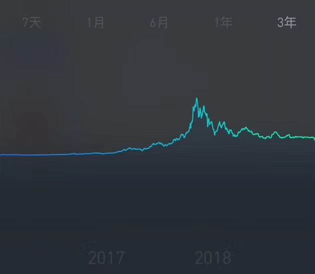

首先感谢，感谢在我搭建博客的过程中，所有给予我帮助和灵感的人事物、信息和技术。
一、具体操作指引
1、打开GitHub pages
链接https://pages.github.com/ ，可以直接按照上面的操作指引来操作
(1)创建 github repository
官网说明如下图，需要先注册登录GitHub，然后创建repository，命名方式为username.github.io，注意用户名保持一致。

（2）git client 我使用了桌面客户端（下载链接 https://desktop.github.com ）

（3）下载 GitHub desktop 并登录，选择你创建的repository，并点击clone按钮。然后就可以看到本地的克隆文件的路径。


2、下面先转到MWeb这里，下载并使用MWeb创建静态网页
（1）首先左下角新增静态网站分类

（2）对这个站点的名称、模版等进行设置

（3）在里面写一篇文章，然后选择生成网站

(4)生成网站后，还是在这个下拉菜单中选择“在finder中显示网站生成位置”，就会定位到本地文稿所在位置。

(5)将这里的所有文件复制到 github在本地的克隆文件中
3、最后一步，文件上传与同步
打开GitHub desktop，左边栏中就是我们要同步的新增文件。点击左下的commit，然后点击右上角的push按钮。这样就OK了，你可以访问一下你的网站（username.github.io）看看效果了～


二、总结一下
最初想用wordpress搭建网站，没成功，后来发现github+mweb也是一个很好的组合（便宜、简单）。虽然现在有各种高低门槛的内容写作平台，媒介形式也不仅限于文字、图片（比如vlog），这些平台对于搜索、流量也会有一定的帮助和优化，但是也会因此受平台的限制。我们目前搭建的网站貌似支持RSS订阅，所以感兴趣的话可以订阅一下我的个人网站 lemonorz.github.io(哈哈，刚刚起步)。
三、搭建博客的初衷
1、经验输出
自己在工作学习中输出了很多经验，最初是总结给自己的，一不小心发现可以给自己和他人同时创造价值，何乐不为？
2、感受输出
（此处有抒情，可以略过）
其实从小到大，一直有写文字的习惯。从小学的日记、摘抄，到自我意识苏醒之后的自我对话、自我倾诉，抑或者是傻叉的单相思，白纸黑字。是从什么时候，暂停了这件事呢？大概就是从开始真正剥离自我、融入社会开始吧。从投第一份简历开始、从开始给别人打工开始，从开始琢磨怎么自由职业开始。当然了，也有可能是从建立了稳定的亲密关系开始。。。开始觉得和自我的对话已经没有任何意义了。和爱人的对话、玩笑，让我不再孤单、让我哈哈大笑；和社会的对话让我知道自己处于什么样的社会阶层，让我知道自己的哪些基本面被社会和他人认可，而哪些无关紧要，哪些是多余的；和信息、内容、资讯、媒体的对话，让我的生活满满当当。扪心自问，只有在没有别人、没有手机、没有媒体的时候，我才能真正感受到自己作为独立个体的情绪、感受。。。
也许是自我和外物的矛盾积压已久，和自己对话、获取片刻宁静的诉求也变强了。有时候深夜里，一种感受、念头出现，非常想找人聊聊，或者找本书聊聊，可是却找不到。第二天醒来，这个感受好似从来没有发生过，消失无踪。。。对，或许人就是会产生很多无意义的感受，任凭其消失或许是件好事。可是我想通过文字，存储下来这些看似无意义的东西。或许哪天我自己会看到，或许哪天另一个人会看到，并且产生共鸣。
这里还需要提及另一个原因，我常常觉得自己喜欢内容创作，但是其实我只是内容写作或者搬运，根本谈不上创作。翻翻自己写的东西，无非是从别人的经验学来，自己总结总结再搬出来，和复读机一样。现阶段，对我而言，或许只有抒发一下感受，才能算作内容”创作“了吧。
3、定义自己

上图是2017-2018年比特币的汇率变化，当时我看到这个曲线，脑子里突然浮现一句话，当然这句话是听《未来简史》时，对于图灵测试的一个评价————“你是谁不重要，重要的社会觉得你是谁”，同样地，“你是否具有‘价值’不重要，重要的是人们觉得你是否具有‘价值’”，正因如此，比特币还是比特币，价格却可以出现如此大的波动。这让我觉得似曾相识，有时候，因为别人的判断和评价，我仿佛一夜之间跌入价值的谷底，又有时候又仿佛一下子站在价值的高地，然而我还是我。几次这样的波动之后，我才分清楚了他人（眼中的我）和自己。进一步的，我在想，如何才能摆脱一些标签和刻板印象，真正定义自己？或许自我表达也是一个定义自己的途径？